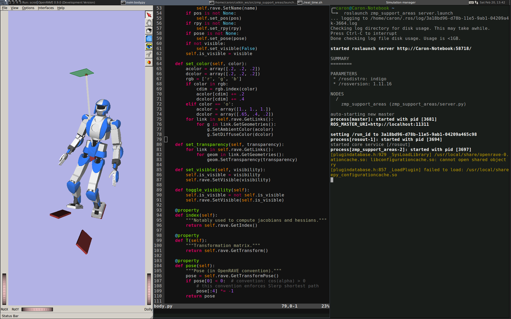
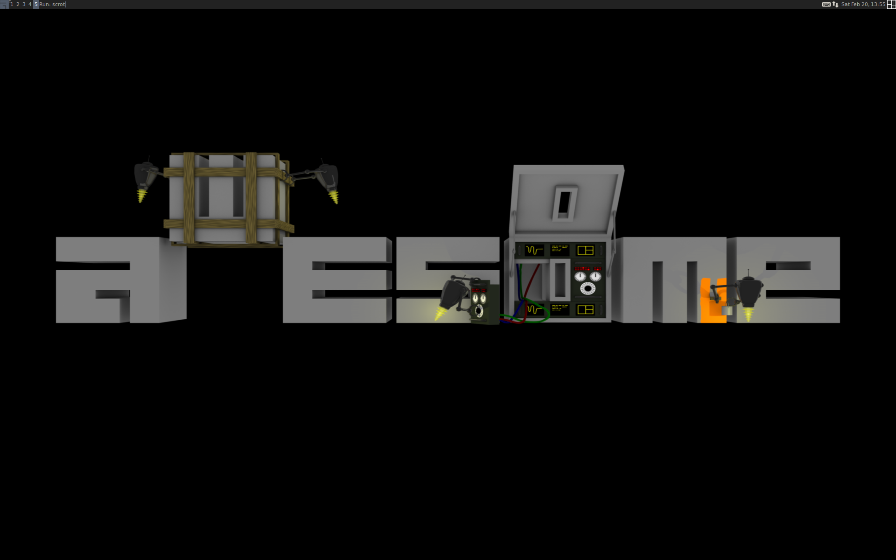

Tiling window managers are useful companions. They manage windows for you, so that you don't have to drag-and-click windows around all the time. They avoid window overlaps and unused screen space. Yet, they are less intuitive for beginners. In this post, I would like to introduce you to the basics of awesome, which is the tiling window manager I use. If you already know the basics, you can jump directly to the keyboard cheat sheet.

First contact¶
Getting awesome to run on Debian/Ubuntu systems is easy: run sudo apt-get install awesome, then select "awesome" as your window manager when you log-in.
The first time you start awesome, it won't be very engaging: nothing more than a default background and a desktop bar at the top of the screen. When you click on the left end of this bar, a small menu pops out, with basic options such as spawning a terminal, reading the manual (to get the list of keyboard shortcuts), restart or exit.
Terminal¶
First, launch a terminal by pressing Mod4 + Enter.
- Mod4 is the "special" key (typically, the Windows key...) located between Ctrl and Alt on your keyboard.
From there, you can run your usual software, for instance nautilus (the
Gnome file manager), firefox, gvim or thunderbird.
Run prompt¶
As you don't want to open terminals all the time, awesome lets you run software
directly: type Mod4 + r and a "Run:" prompt will appear in your desktop
bar. You can then type your command as if you were in a terminal, for example:
firefox -new-tab https://wikipedia.org/.

Tags, layouts and windows¶
Tags¶
By default, you will have nine desktops, which awesome calls "tags" if you read the manual. You can switch between them by using Mod4 + tag number, or Mod4 + left and Mod4 + right. New windows are spawned in the current tag.
Layouts¶
In awesome, windows are organised on your desktop following a desired layout. At first, you will be in the "floating" layout, where awesome does not reorganize your windows. Press Mod4 + Space to switch to the next layout, which should be "tile". The icon at the right end of your desktop bar represents your current layout:
As depicted by its icon, the tiling layout consists of two columns: one for master windows and the other for "non-master" windows. By default, there is only one master window occupying half of the screen, while all other non-master windows are stacked vertically.
There are twelve default layouts in awesome, which you can configure in the
layouts variable of your configuration file
~/.config/awesome/rc.lua. In my case, I only use two of the four tiling
layouts: tile and tile.bottom.
layouts = { awful.layout.suit.tile, awful.layout.suit.tile.bottom, -- awful.layout.suit.max, -- awful.layout.suit.floating, -- awful.layout.suit.tile.left, -- awful.layout.suit.tile.top, -- awful.layout.suit.fair, -- awful.layout.suit.fair.horizontal, -- awful.layout.suit.spiral, -- awful.layout.suit.spiral.dwindle, -- awful.layout.suit.max.fullscreen, -- awful.layout.suit.magnifier }
Windows¶
For beginners, the easiest way to focus a window is to use the mouse: when your pointer hovers a window, it becomes active. You can also move windows around in your layout by Mod4 + drag-and-clicking it around.
When your workspace gets cluttered, you can make your active window fullscreen
with Mod4 + f, or minimize it with Mod4 + n. The best way to close a
program is to quit it from inside, using its menu (File → Quit in Firefox)
or sending it a command like exit in a terminal. If the program is
frozen or no such option is available, you can send it a (rather tough) kill
signal by doing Mod4 + Shift + c on its window. This is usually terminal
;-)
Example: four windows on one screen¶
Here is a simple example: imagine you want four windows of equal dimensions on your screen. One way to realize this is through the default tiling layout:
- Open your four applications.
- Go to the tiling layout (the layout icon is the rightmost icon you see on the image above). Initially, you should see one window maximized to the left, and three windows stacked to the right half of your screen.
- Press Mod4 + h to increase the number of windows in your main column (left part of the screen).
- Finally, you can use Mod4 + drag-and-clicking to move your windows around in the order you like.
Beginner's Cheat Sheet¶
Now we have touched all the basics to survive the first steps in awesome. Here is the summary of keyboard shortcuts we have seen:
| Mod4 + Enter | spawn a terminal | Mod4 + r | spawn the run prompt |
| Mod4 + n | minimize window | Mod4 + f | fullscreen window |
| Mod4 + Left | go to left desktop | Mod4 + Right | go to right desktop |
| Mod4 + Space | go to the next layout | Mod4 + Shift + c | kill focused window |
| Mod4 + 1-9 | switch to desktop 1-9 | Mod4 + Shift + q | quit awesome |
The list is not exhaustive, check out man awesome to learn about other
shortcuts and additional features. In awesome terminology, you will find that a
"client" is a window and a "tag" is what we commonly think of as a "desktop".
Setting up Awesome with GNOME¶
Some features provided by GNOME, for instance the screensaver of password keyring, will not be available when you run Awesome by itself. See the post configuring Awesome with GNOME on Ubuntu 14.04 for instructions.
Discussion ¶
Feel free to post a comment by e-mail using the form below. Your e-mail address will not be disclosed.